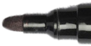
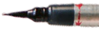
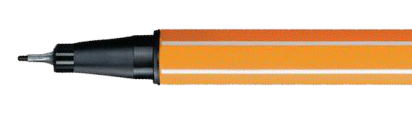
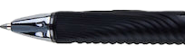
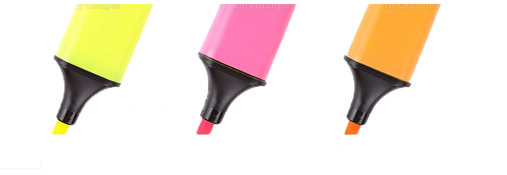
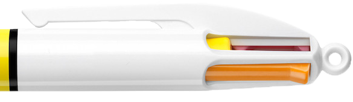

Marker 
En penna, stift gjort av filt. Är vatten- eller alkholbaserad i flera olika tjocklekar och nyanser.
Brush 
En slags färgpenna, med en penselspets, som kan bestå av antingen strån eller fast form.
Fineliners 
De flesta fineliners består av en fiber- eller plastspets, det är tunna pennor som ritar tunna linjer, torkar snabbt.
Gel 
En gelpenna upplevs som väldigt mjuk att skriva med, det beror på att pigmenten i pennan är blandat med vattengel.
Highlighter 
En highlighter eller även kallat överstrykningspenna, är en transparant tuschpenna, som kan lyfta fram ord.
Multipennor 
Är en penna med flera färger, där en även får vilken av färgerna som ska brukas, är ofta kulspetspenna